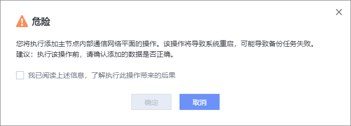

如果您需要使用集群高可用特性，请先参考本节操作，为主节点添加内部通信网络平面，用于备份集群各节点通信。
前提条件
- 配置集群高可用前，请确保已在DeviceManager界面为每个节点设置NTP自动同步，具体操作请参见《管理员指南》中的“配置设备时间”章节。
- 主节点内部通信网络平面需要至少预留2个IP地址。
注意事项
- 添加主节点内部通信网络平面后，将导致系统重启，可能导致备份任务失败。
- 内部通信网络平面添加完成，且已添加成员节点后，内部通信网络平面不支持修改，请谨慎操作。
操作步骤
- 选择。
- 选择“备份集群”。
- 在主节点所在行右侧选择。
- 在弹出的窗口中填写内部通信网络平面名称。可以复用备份网络平面或在DeviceManager上创建内部通信网络平面。
- 复用备份网络平面。查询备份网络平面名称方法：
- 在“备份集群”页面，单击主节点名称。
- 系统右侧弹出窗口，单击“打开设备管理”进入DeviceManager界面。
- 在“系统 > 容器服务 > 网络平面”页面查看网络平面名称。
- 在DeviceManager上创建内部通信网络平面。创建内部通信网络平面的方法请参见《管理员指南》中的“新增内部通信网络”章节。
- 复用备份网络平面。查询备份网络平面名称方法：
- 单击“确定”。
- 系统弹出“危险”提示框，确认提示信息无误后，勾选“我已阅读上述信息，了解执行此操作带来的后果”，单击“确定”。


如果您需要修改或删除已添加的内部通信网络平面，请在主节点所在行右侧单击或进行操作。后续添加了成员节点后，无法修改或删除内部通信网络平面。